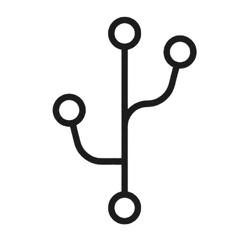
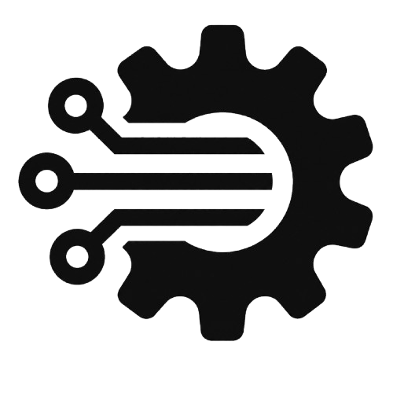

Academic Journey
Growing toward a software engineering career that aligns with big tech excellence.
-

2025
Started at University of Brasilia
Began a Software Engineering degree at UnB, building a strong foundation in programming, algorithms, and system design, enhancing my skills and knowledge in areas such as AI, structured programming (C, Python and JavaScript), and subjects common to Engineering courses like linear algebra, physics, and calculus.
-

2026
Project-driven growth
Focused on collaborative software projects, practical engineering workflows, and real-world problem-solving. I expanded my technical stack to include Git, Docker, JavaScript, React, HTML, and CSS, solidifying my knowledge of web development, agile practices (Scrum), and software architecture. Additionally, I studied AI fundamentals at UnB's AIlab and through platforms like Alura, Samsung Ocean, and Oracle, enabling me to deliver intelligent solutions and deploy my first AI agent using n8n, Cohere, and Railway.
-

2027
Software Quality and Testing
Sharpening my skills in cloud engineering, scalable architecture, clean code, and product-minded development.
-
And more
to
come!